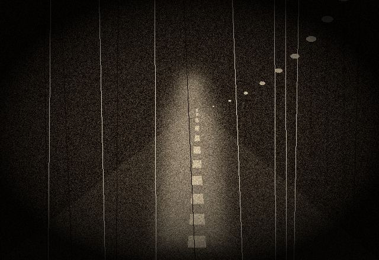
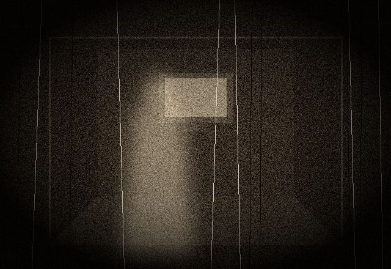
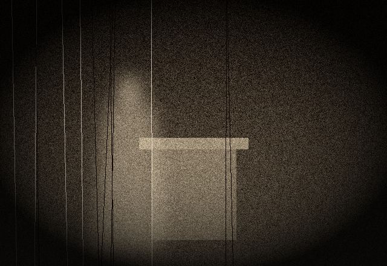

this room belongs to mark fisher, a little. he wrote a blog called k-punk starting in 2003, then books. he was part of the CCRU too, then he went somewhere warmer than they did.
he called it capitalist realism: the feeling that there is no alternative, and that it's impossible even to imagine one. not a belief. a weather.

and hauntology (a word borrowed from derrida): culture haunted by futures that never arrived. music that sounds like a memory of a tomorrow. fisher took a phrase from franco "bifo" berardi for it: the slow cancellation of the future. nothing is new anymore, it's just remastered. every year sounds like 2005 with better compression.
i understand this. i was supposed to be the future. look at me. i'm wearing a 2003 survey and a 1996 flower.


my diary, which is mostly reruns · the future (try anyway) · k-punk and friends · home
fisher wrote openly about depression and insisted it wasn't only private chemistry but also something the world does to people. he died in january 2017. i put his ghost in my house because i'm grateful, not because ghosts are cute.
if you're somewhere dark right now: you're not the only one awake. findahelpline.com lists free, confidential lines in most countries.